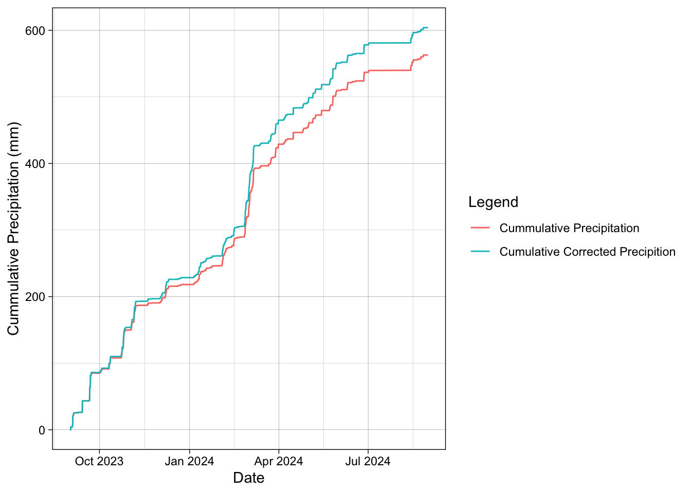
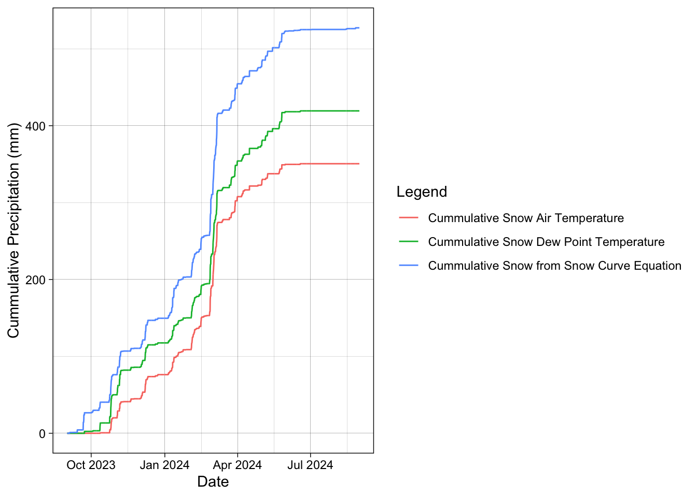
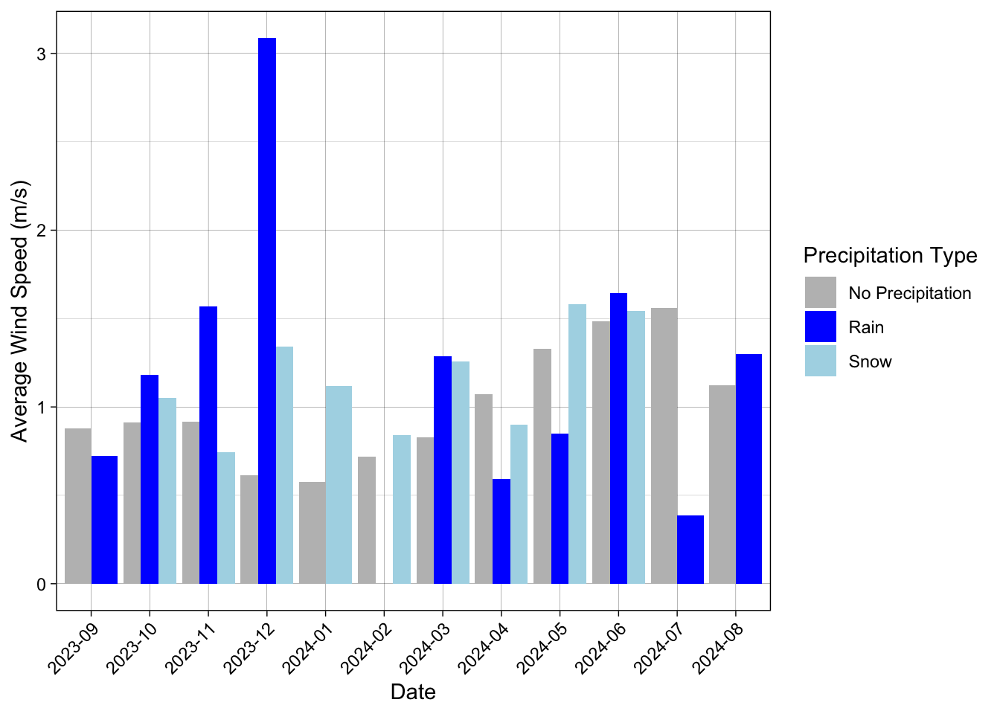

Monthly_average_wind_speed <- ASOS_yellowstone_CR_clean %>%
mutate(
precipitation_type = case_when(
tmp_c > 0 & P_corr > 0 ~ "Rain",
tmp_c <= 0 & P_corr > 0 ~ "Snow",
TRUE ~ "No Precipitation"
),
month = format(valid, "%Y-%m")
) %>%
group_by(month, precipitation_type) %>%
summarize(avg_wind_speed = mean(wind_ms, na.rm = TRUE), .groups = 'drop')Trace Events, Precipitation Undercatch, and Probability of Snow
Billy Johnson October 4, 2024 Dr Fassnacht Advanced Snow Hydrology
Assignment 5. Trace Events, Precipitation Under catch, and Probability of Snow
Methods. To begin analysis on trace precipitation events I began with loading in the ASOS data from Yellowstone National Park (Station P60). When downloading data, I told the mesonet website to count trace events as a T. To help keep data frames organized and clean I created a new data frame that only contained the date, and the precipitation recorded. In this data frame I noticed that this station did not record trace events. Knowing this I was not able to create a comparison between trace events and actual recorded precipitation. I used a cumsum function in R studio to calculate the cumulative precipitation for water year 2023 (Figure 1.) For my second question regarding correction for under catch my analysis started again with creating a new data frame with the variables needed (date, precipitation, temperature, windspeed and relative humidity). The next step in my analysis was to get all the different variables into metric units. To help analysis I used the complete.cases function in R to remove all of the rows with missing observations. To then begin analysis on determining the catch efficiency of the ASOS station I create a column that calculated the catch efficiency for snow (CR_snow = exp(-0.04 * wind_ms ^ 1.75)) and the catch efficiency for Mixed precip (Cr_mix = 1.0104-0.0562 * wind_ms) for each observation. I then created a function to find what observations meet the threshold for snow (T <= 0oC) and for mixed precip. (0oC < T <=3oC) and if they meet those conditions I would apply the CR value to the measured precipitation. I was then able to use the cumsum function that calculated the cumulative precipitation with correction for under catch and without correction (figure 2.) The third questions analysis to determine the cumulative hourly precipitation with different thresholds to determine snow began with a new the same data frame from the previous calculation. The first step in this analysis was to create a column using an if statement that determined if precipitation was snow based on air temperature. I used a threshold of 0o C for air temperature. I then used a similar if function to determine if the precipitation was now but with the dew point temperature. I began this step with creating a column that had calculated the dew point temperature for each observation. I then set my if statement to determine if the dew point temperature was below 0o C then it would be recorded as snow. Finally, the last way to determine if the precipitation was snow, I calculated the snow probability curve with Walden Colorado as my reference. This equation gave me fraction of precipitation that was snow for each observation. I told the if statement to determine when the fraction was positive and then record that as snow. I then used the cumsum function to determine the cumulative precipitation from each different threshold (figure 3.). The final question in my analysis was to determine the average monthly wind speed for each type of precipitation (Snow, Rain and No Precipitation). To begin this analysis, I create a new table for average monthly wind speed. I first create a column, using a function to determine if the temperature was below 0 degrees and if it was currently precipitating then label it as snow. I did the same for rain but above 0 degrees. I finally said if none of it was true then label it as no precip. Finally, I grouped the data by month and by precipitation type and calculated the mean. I then plotted these values on a bar chart (figure 4.)
Results
Figure 1. The cumulative hourly precipitation (mm) for Yellowstone National Park ASOS station for water year 2023.
This ASOS station in Yellowstone, Wyoming had just under 600 mm of precipitation that fell during the 2023 water year. This station did not measure trace events and therefor I was not able to compare values. Figure 2. Cumulative precipitation vs corrected cumulative precipitation for water year 2023 at Yellowstone National Park.
After completing analysis and calculating the wind under catch and correcting those values the amount of total precipitation increased from just under 600 mm to over 600 mm of total precipitation. Big changes in the data occurred after storm events during the winter months. Figure 3. Cumulative precipitation comparison between three different thresholds to determine if precipitation was snow.
From this analysis I found that using air temperature as a threshold compared to the other methods produced the least amount of cumulative precipitation, while using the snow curve method acquired the most amount of snow. Using the dew point temperature as a threshold gave us cumulative snow that was between air temperature and the snow curve right around 400 mm of snow. Figure 4. Average monthly wind speed through the year during different precipitation types. No precipitation, snow and rain were compared at Yellowstone National Park.
This analysis showed us that there were high wind speed observations during December this water year. The highest wind speed also occurred when it was raining. On average December had large amounts of wind with a lot of variability between precipitation types. June on the other hand had similar average wind speed between the different precipitation types. Discussion When looking at the total cumulative precipitation thought the year at Yellowstone National Park (figure 1) we find that most of the precipitation occurs in the winter months. This makes sense based on the type of storms that is generally seen in this part of the country (orographic lift). While the end of the summer and into fall generally do not see the same amount of precipition events. We can look at how much wind had played a factor into creating under catch (figure 2). Based on this analysis we do see an increase in the cumulative precipitation when it was corrected for wind (figure 2) but is not dramatically increased. This does make sense as a result. The average wind speed in this location is not overly high (figure 4) meaning that we may not have a lot of under catch in this specific ASOS station. The general properties of the station may have an impact on the amount of under catch that is recorded. Another reason that this may not be as dramatic of a difference could be because the station did not record trace events. Finally, this result could have been also due to the air temperature threshold that was used. This leads into the third question in the analysis, comparing methods for determine snow with a threshold. In this part of the analysis, we found that using the snow curve equation had a much higher cumulative perceptional total. This could be due to the nature of the equation that was used as it was the only linear reference. The Walden equation is the correct equation for my station as it shares many general climatic properties. In this analysis we also found that the dew point temperature as a threshold also accumulated more snow (figure 3). This makes sense because it considers more of the properties at that specific time. Finally in the last question of my analysis we looked at the average wind speed for each month based on what type of precipitation was falling (figure 4). This graph shows us that overall, through the year the wind is generally low. There is one major increase in wind during December. This is a weird observation because it is also when the precipitation type was rain. This also is a weird observation for December. I think that this could be caused due to the limited number of observations of rain during this month. If one event with rain occurred and it was windy it would cause the graph to have a much higher average than the rest (figure 4). Overall then snow was occurring in that month the wind was higher during those snow events. We find that there are no rain events in January or February, and this makes sense as it would be too cold for it to rain. We also find that the months of July August and September do not have snow events. This also makes sense when comparing it to other climates with similar spatial characteristics.
Code
Load in the data
Pine Creek USGS
ASOS data PNA
SNOTEL data location: Parker Peak (683)
| # Question 1 ## Trace Precipitation events |
|---|
| # Question 2 ## Precipitation Under-catch Correction |
| Using the hourly precipitation including trace events, determine the cumulative hourly precipitation (in mm) before and after correcting for wind under-catch. Use 0oC as the threshold for snow to fall, and allow mixed precipitation for air temperatures from 0 to 3oC. State an assumption for the catch efficiency for rain. All subsequent questions will use the hourly precipitation including trace events and corrected for under-catch. Plot the two (without and with correction for under catch) cumulative curves versus time. |
| ::: {.cell} |
{.r .cell-code} # Create data frame to help clean it up ASOS_yellowstone_withCR <- ASOS_yellowstone_original %>% select(valid, p01i, tmpf, sknt, relh) %>% # Switch the temperature to Celsius mutate(tmp = tmpf - 32) %>% mutate(tmp_c = tmp * 0.55555555555) %>% # Switch knots to m/s mutate(sknt = as.numeric(sknt)) %>% mutate(wind_ms = sknt / 1.944) %>% # Switch inches to mm mutate(P_mm = p01i * 25.4) |
| ::: {.cell-output .cell-output-stderr} |
Warning: There was 1 warning in `mutate()`. ℹ In argument: `sknt = as.numeric(sknt)`. Caused by warning: ! NAs introduced by coercion |
| ::: |
{.r .cell-code} # Remove all of the rows with missing data. ASOS_yellowstone_CR_clean <- ASOS_yellowstone_withCR[complete.cases(ASOS_yellowstone_withCR), ] ::: |
| ::: {.cell} |
| ```{.r .cell-code} ASOS_yellowstone_CR_clean <- ASOS_yellowstone_CR_clean %>% mutate(CR_snow = exp(-0.04 * wind_ms ^ 1.75)) %>% mutate(CR_mix = 1.0104-0.0562 * wind_ms) |
| ASOS_yellowstone_CR_clean <- ASOS_yellowstone_CR_clean %>% mutate(P_corr = case_when( tmp_c <= 0 ~ P_mm / CR_snow, # Snow case tmp_c > 0 & tmp_c <= 3 ~ P_mm / CR_mix, # Mixed precipitation case TRUE ~ P_mm # Rain case (assumed 100% catch efficiency) )) ``` ::: |
| ::: {.cell} |
| ```{.r .cell-code} ASOS_yellowstone_CR_clean <- ASOS_yellowstone_CR_clean %>% mutate(cummulative_precip_mm = cumsum(P_mm)) %>% mutate(cummulative_corr_precip_mm = cumsum(P_corr)) |
| ASOS_yellowstone_CR_clean %>% ggplot()+ geom_line(aes(x = valid, y = cummulative_precip_mm, color = “Cummulative Precipitation”))+ geom_line(aes(x = valid, y = cummulative_corr_precip_mm, color = “Cumulative Corrected Precipition”))+ labs( x = “Date”, y = “Cummulative Precipitation (mm)”, color = “Legend” )+ theme_linedraw() ``` |
| ::: {.cell-output-display}  ::: ::: |
| # Question 3 |
| ## Precipitation as Snow |
| Determine the cumulative hourly precipitation (in mm) that is defined as snow from the following three methods. Plot all three cumulative curves on one graph. |
| 1. the 0oC rain/snow threshold using air temperature, |
| ::: {.cell} |
{.r .cell-code} ASOS_yellowstone_CR_clean <- ASOS_yellowstone_CR_clean %>% mutate(snow_Ta = ifelse(tmp_c <= 0, P_corr, 0)) ::: |
| 2. the 0oC rain/snow threshold using dewpoint temperature, and |
| ::: {.cell} |
{.r .cell-code} ASOS_yellowstone_CR_clean <- ASOS_yellowstone_CR_clean %>% mutate(Td = tmp_c - ((100 - relh)/5)) %>% mutate(snow_Td = ifelse(Td <= 0, P_corr, 0)) ::: |
| 3. based on the mixed precipitation/probability of snow curve using air temperature that best suits your data. Assume that the probability of snow is equal to the fraction of snow per hour that is snow. Use the corrected precipitation estimates from above. State which mixed precipitation probability curve that you used, and why. |
| ::: {.cell} |
{.r .cell-code} ASOS_yellowstone_CR_clean <- ASOS_yellowstone_CR_clean %>% mutate( snow_prob = tmp_c * -0.0837 + 0.807, # Calculate snow probability snow_from_fraction = snow_prob * P_corr, # Calculate snow from fraction snow_from_fraction = ifelse(snow_from_fraction <= 0, 0, snow_from_fraction) # Ensure non-negative values ) ::: |
| #### Graph |
| ::: {.cell} |
{.r .cell-code} ASOS_yellowstone_CR_clean <- ASOS_yellowstone_CR_clean %>% mutate(cumm_snow_Ta = cumsum(snow_Ta)) %>% mutate(cumm_snow_Td = cumsum(snow_Td)) %>% mutate(cumm_snow_F = cumsum(snow_from_fraction)) ::: |
| ::: {.cell} |
{.r .cell-code} ASOS_yellowstone_CR_clean %>% ggplot()+ geom_line(aes(x = valid, y = cumm_snow_Ta, color = "Cummulative Snow Air Temperature"))+ geom_line(aes(x = valid, y = cumm_snow_Td, color = "Cummulative Snow Dew Point Temperature"))+ geom_line(aes(x = valid, y = cumm_snow_F, color = "Cummulative Snow from Snow Curve Equation"))+ labs( x = "Date", y = "Cummulative Precipitation (mm)", color = "Legend" )+ theme_linedraw() |
| ::: {.cell-output-display}  ::: ::: |
| ::: {.cell} |
{.r .cell-code} write_csv(ASOS_yellowstone_CR_clean, file = "DataOut/ASOS_undercatch_assingment.csv") ::: |
Question 4
Wind During Precipitation Events
Compare the monthly average wind speed during rainfall events, snowfall events, and when no precipitation is occurring. Use a 0oC air temperature threshold to distinguish between rain and snow.
- Wind During Rainfall events (0 degree threshold)
- Wind during snowfall events
- Wind when no precipition is occuring
Plot
ggplot(data = Monthly_average_wind_speed, aes(x = month, y = avg_wind_speed, fill = precipitation_type)) +
geom_bar(stat = "identity", position = "dodge") + # Use 'dodge' for side-by-side bars
labs(
x = "Date",
y = "Average Wind Speed (m/s)",
fill = "Precipitation Type"
) +
theme_linedraw() +
scale_fill_manual(values = c(
"Rain" = "blue",
"Snow" = "lightblue",
"No Precipitation" = "grey"
))+
theme(axis.text.x = element_text(angle = 45, hjust = 1))